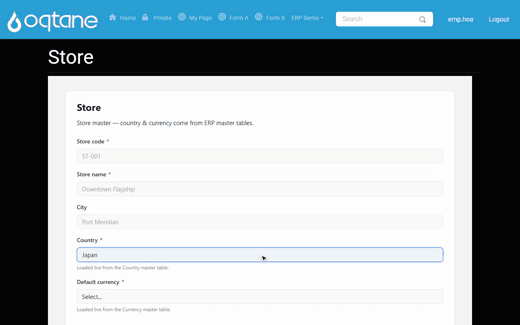
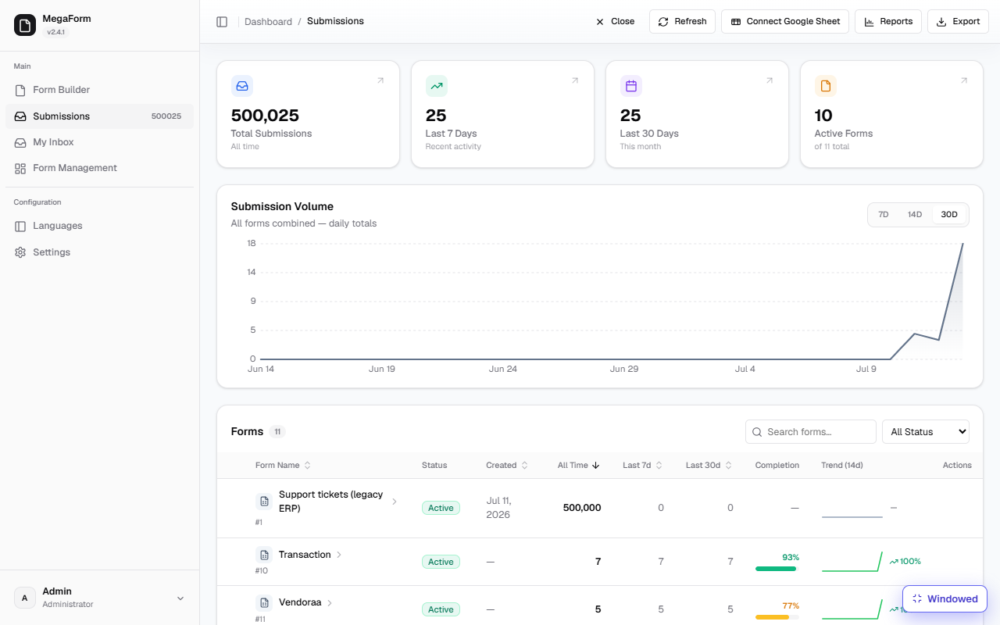
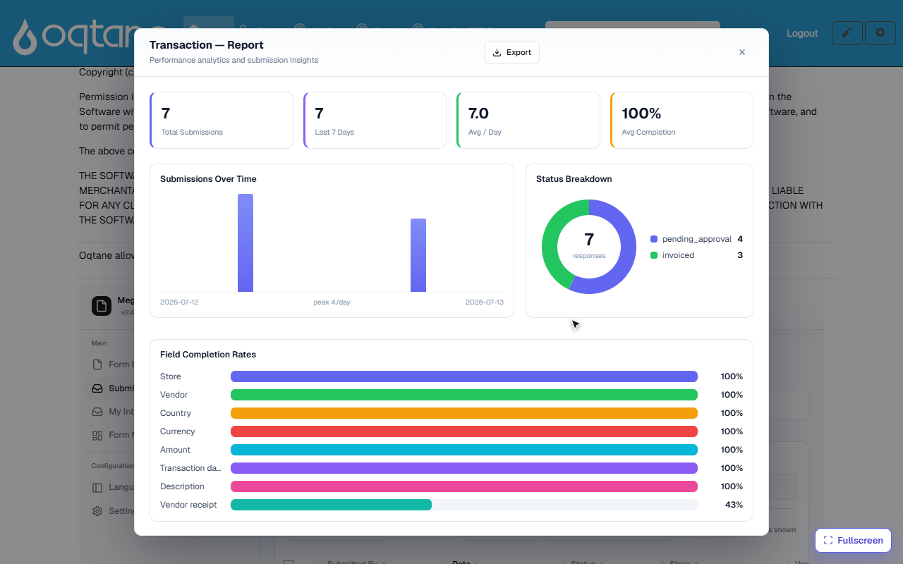

End-to-end demo — master data, stores, vendors, transactions, invoices, reports
This walkthrough builds a small ERP-style flow with no custom code — only SQL tables, forms, and configuration. Every step below was built and verified on a live site before being written up:
Master data → Store → Vendor → Transaction (with receipt) → Invoice on approval → Dashboard & reports

1. Master data — plain SQL tables, no UI
Country and Currency live as ordinary tables in your database (here: a LegacyErp_Demo
SQL Server database). MegaForm reads them; nobody has to build an admin UI for them:
CREATE TABLE dbo.Country (CountryCode CHAR(2) PRIMARY KEY, CountryName NVARCHAR(80), Region NVARCHAR(40));
CREATE TABLE dbo.Currency (CurrencyCode CHAR(3) PRIMARY KEY, CurrencyName NVARCHAR(60), Symbol NVARCHAR(5), DecimalPlaces TINYINT);
-- seeded with 8 countries and 7 currencies for the demo
The site knows this database by a named connection — either a connection string in
appsettings.json (ConnectionStrings:CustomerErp) or a reusable connection saved under
Settings → Database Settings (see Storage & Integrations).
2. Store form — dropdowns driven by the master tables
The Store form has store_code, store_name, city — and two data-source-driven
dropdowns. A dropdown becomes SQL-driven through its field properties:
"properties": {
"optionsSource": "sql",
"optionsConnectionKey": "CustomerErp",
"optionsSql": "SELECT CountryCode, CountryName FROM dbo.Country ORDER BY CountryName"
}
The first selected column is the stored value, the second is the label (the Currency dropdown
uses CurrencyName + ' (' + Symbol + ')' for labels like Zephyrian Crown (Ƶ) — the demo data
uses the fictional country of Zephyria and its currency). Options are fetched live per render —
add a row to dbo.Country and it appears on the next load. Queries are SELECT-only, run
server-side on the named connection, and support :field tokens for
cascading dropdowns.
The Store form also writes back to the ERP database: a per-form database insert
(Settings → Database) mirrors every submission into dbo.Stores the moment it arrives:
"databaseInsert": {
"enabled": true,
"connectionKey": "CustomerErp",
"insertSql": "INSERT INTO dbo.Stores (StoreCode, StoreName, City, CountryCode, CurrencyCode)
VALUES (:store_code, :store_name, :city, :country, :currency)"
}
Registering three stores through the form produced exactly three rows in dbo.Stores — the
insert is parameterized (:token → field key), INSERT-only, and fail-soft (a database problem
never loses the submission).
3. Vendor form
Same pattern: vendor_name, contact_name, email, phone, tax_id, plus the same SQL-driven
Country dropdown, mirrored into dbo.Vendors. Three vendors were registered for the demo.
4. Transaction form — reference fields + receipt
The Transaction form is where everything meets. Its reference dropdowns all read the ERP database live:
| Field | Options come from |
|---|---|
| Store | dbo.Stores — the table the Store form maintains (label Riverside Flagship — ST-001) |
| Vendor | dbo.Vendors — maintained by the Vendor form |
| Country | dbo.Country master table |
| Currency | dbo.Currency master table |
plus amount (Number), transaction_date (Date), description, and a Vendor receipt File
field (PDF/JPG/PNG, 10 MB limit). In the recording the receipt is attached right on the form —
the dropzone uploads it as soon as it is picked (⏳ → ✓) — and after submit the file shows up as
a paperclip download link on the transaction's row in the submissions grid and in the detail
panel's Attachments section. Receipts are held in private storage — never under the public web
root — recorded against their transaction, and streamed back through an authenticated download
URL (see File download).
One dropdown gotcha worth knowing: give the label column an alias when it is derived (
VendorName + ' (' + CountryCode + ')' AS VendorLabel) — a result set that repeats the same column name twice returns no options.
5. Invoice on approval
The Transaction form carries a small BPMN workflow:
Transaction submitted → Finance review — issue invoice (Approval, candidate role Finance) → Done.
The approval node's outcome statuses do the invoicing bookkeeping:
| Setting | Value |
|---|---|
| Pending status | pending_approval |
| Approved status | invoiced |
| Rejected status | rejected |
So the moment a transaction is submitted it goes to the Finance role's
My Inbox; when Finance approves (with an optional note), the submission
is stamped invoiced — no one updates a status by hand. In the recording, the transaction
submitted at the start is approved by the finance user and lands in the report as invoiced
seconds later. On a host with SMTP configured, a Send Task node after the approval can also
email the invoice details automatically (see Workflow).
6. Dashboard & reports

The Submissions dashboard covers all entities at once — totals, recent activity, a submission-volume chart, and a per-form table (stores, vendors, transactions each with their counts, completion rate and 14-day trend).
Each form also has a one-click Reports view:

- Status Breakdown is the transaction summary with invoice status: the donut splits
invoicedvspending_approvalstraight from the workflow's outcome statuses. - Field Completion Rates shows data quality per field — only the transactions that actually carried a receipt count toward the Vendor receipt bar, so it doubles as a "receipts missing" indicator.
- Country-wise and currency-wise views come from the grid itself: add a filter chip (Country is VN, Currency is USD), save it as a preset, and Export the slice — see Submissions Grid.
What this demo proves
| Requirement | How it is met |
|---|---|
| Master data without UI | Plain SQL tables (Country, Currency) read live by dropdowns |
| Store / Vendor entry | Forms with SQL-driven reference dropdowns, mirrored into ERP tables |
| Transaction with references | Store, Vendor, Country, Currency dropdowns all resolved from the ERP database |
| Receipt upload | File field with type/size validation; receipts stored privately, downloadable from the grid and the detail panel |
| Invoice generation | Approval workflow stamps invoiced automatically on completion |
| Dashboard & reports | All-forms dashboard + per-form report with invoice-status breakdown + filterable, exportable grid |
Everything above is configuration: two master tables, three forms, one workflow — about an hour of setup, no compiled code.